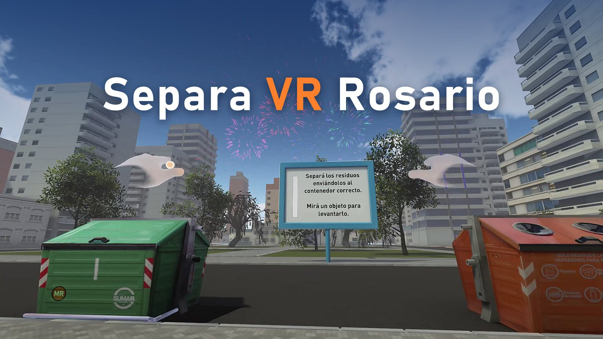
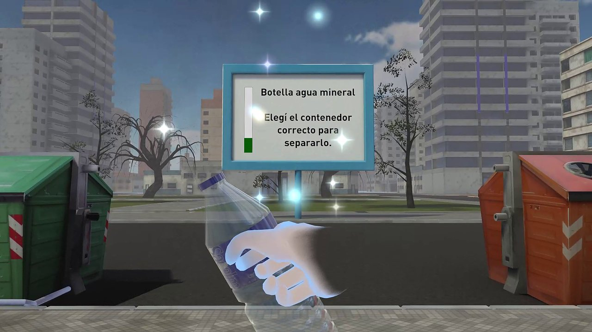
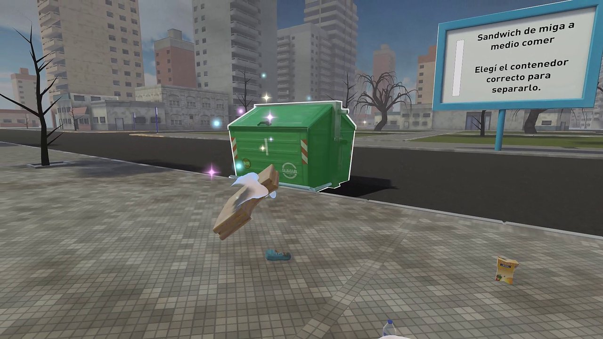
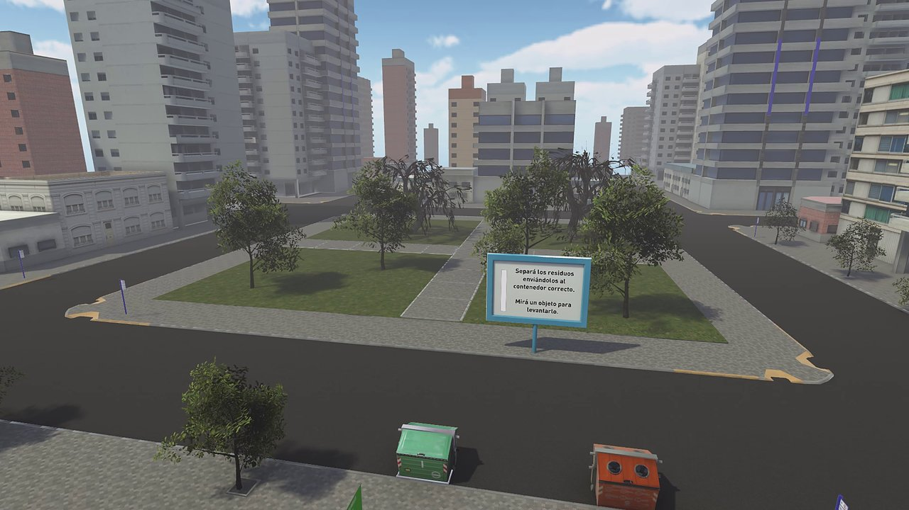

Separa VR Rosario
A short environmental education experience for Meta Quest. Pick up waste with your own hands, sort it into the right bin, and watch the city change.
About the game
Separa VR Rosario places you in a virtual city inspired by Rosario, Argentina. You pick up waste items one at a time and drop each one in the right bin: recyclable in the orange bin, non-recyclable in the green bin.
Each correct choice makes the city cleaner, greener and brighter, and the music and sounds change along with it. The idea behind it is simple: what we do changes the place we live in.
It is designed for people trying VR for the first time. Children, teenagers, adults and seniors have played it at schools, fairs and public events in Argentina.
How it plays
- Stand or sit in one place. There is no artificial movement.
- Reach out with your hands. Hand tracking is used, so no controllers are needed.
- Pick up a waste item and look at what it is.
- Drop it in the orange bin if it is recyclable, or in the green bin if it is not.
- Watch the city get cleaner, greener and brighter as you sort correctly.
A session takes about two minutes.
Screenshots



A project with history
The first version was created in 2015 at the Municipality of Rosario as an environmental education experience for classrooms and public events. It used gaze-based controls.
More than ten years later, it comes to Meta Quest with natural hand interaction. This is an independent project by 3DAngelo, an independent developer based in Rosario, Argentina. This website is not an official site of the Municipality of Rosario.
Contact
Questions or comments: gregoriodangelo@gmail.com
See the Privacy Policy and the Terms of Service.